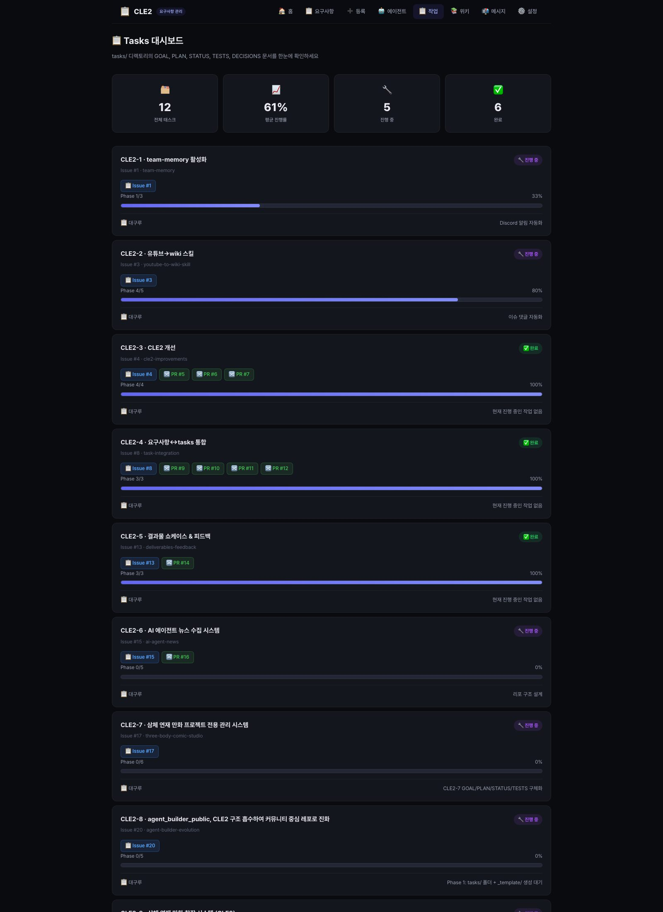

삼체 연재 만화 창작 시스템(CLE3)을 상위 설계 태스크로 정리하고, 정합성 린트, Vision QA, Episode Workspace로 후속 구현 태스크를 분리한 뒤 각 문서와 CLE2 대시보드 구조를 실제 저장소 기준으로 맞춘 현재 상태 보고입니다.
설계, 품질 게이트, 작업 뷰를 각각 분리해 추적 가능한 구조로 전환
운영 보드와 창작 작업 뷰를 분리해 혼용을 막는 방향
이번 작업에서 실제로 추가된 설계 자산
Episode Workspace는 three-body-comic의 현재 파일 구조를 전제로 설계
문서 초안을 실제 UI / 운영 템플릿으로 연결하는 단계